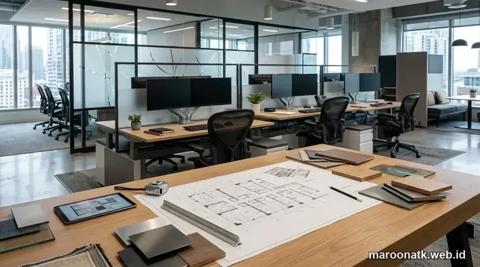

Tantangan Pengadaan Furniture Kantor di Jakarta dan Solusi Terintegrasi
Supplier furniture kantor terpercaya untuk korporasi B2B di Jakarta harus mampu menyediakan layanan pengadaan terintegrasi (end-to-end): mulai dari survey lokasi dan perancangan layout 2D/3D gratis, fleksibilitas fabrikasi custom & modular presisi, instalasi langsung oleh teknisi internal, hingga penerbitan e-Faktur PPN 11%, BAST, dan garansi tertulis 1–3 tahun. Maroon ATK memenuhi seluruh standar ini guna memastikan investasi aset kantor aman dan akuntabel.
Pengadaan sarana interior kantor di wilayah perkantoran Jakarta—seperti gedung bertingkat di koridor Sudirman, Kuningan, SCBD, TB Simatupang, maupun kawasan industri Cikarang—memerlukan penanganan yang jauh lebih kompleks daripada sekadar membeli perabot rumahan. Keterbatasan waktu sewa fitting-out, regulasi loading dock gedung komersial yang ketat, serta kebutuhan penataan workstation ergonomis menuntut kemitraan dengan supplier furniture kantor yang memiliki kapabilitas teknis dan manajemen proyek yang matang.
Sering kali, purchasing team menghadapi kekecewaan saat bekerja sama dengan vendor perantara (tengkulak): barang tiba tanpa tim perakit, ukuran meja meleset beberapa sentimeter sehingga menabrak pilar gedung, hingga ketiadaan faktur pajak resmi yang memicu temuan audit. Mengenal profil Tentang Maroon ATK sebagai mitra pengadaan berbadan hukum PT resmi memberikan kepastian bahwa setiap tahapan pengadaan dieksekusi dengan standar profesionalitas tertinggi.

Harga Paket Furniture Kantor Workstation Jakarta Terbaru
Rincian estimasi biaya pengadaan paket meja workstation staf dan konfigurasi modular untuk korporasi B2B.
Matriks Evaluasi Supplier Furniture Kantor B2B
Berikut adalah tabel parameter evaluasi menyeluruh yang wajib digunakan purchasing team korporat sebelum menentukan vendor furniture kantor:
| Kriteria Evaluasi | Yang Disediakan / Diperiksa | Manfaat bagi Purchasing | Risiko Jika Tidak Ada |
|---|---|---|---|
| 1. Konsultasi Kebutuhan & Survey | Survey fisik denah ruang, pengukuran pilar, elevasi plafon, posisi stopkontak | Perhitungan kapasitas staf akurat dan sirkulasi lorong ergonomis terjamin | Salah pesan dimensi meja yang membuat lorong sempit dan melanggar standar K3 |
| 2. Desain Layout 2D | Gambar denah penataan furnitur berskala metrik presisi (AutoCAD floor plan) | Memudahkan persetujuan manajemen internal dan koordinasi tim General Affairs | Penempatan meja berbenturan dengan jalur evakuasi atau pintu darurat |
| 3. Visualisasi 3D Gratis | Render interior 3D fotorealistis dengan pencahayaan dan material warna riil | Memberikan gambaran visual nyata sebelum proses produksi massal disetujui | Hasil akhir tidak sesuai ekspektasi direksi sehingga menuntut rombak ulang mahal |
| 4. Kapabilitas Custom & Modular | Fabrikasi meja benching, partisi akustik, credenza, dan kabinet arsip presisi | Memaksimalkan 100% luas lantai sewa tanpa meninggalkan celah mati (dead space) | Banyak ruang kosong di sekitar pilar yang terbuang sia-sia setiap bulan |
| 5. Spesifikasi Mutu Material | MFC grade E1 tahan lembab, edging PVC 2mm hot-melt, rangka baja powder coating | Daya tahan struktur awet 7–10 tahun, bebas bau emisi kimia formaldehyde menyengat | Meja melengkung dan lapisan melamin mengelupas dalam hitungan bulan |
| 6. Quotation (SPH) & RAB | Surat Penawaran Harga resmi terperinci per item, transparan, include PPN 11% | Mudah diajukan untuk perbandingan komite pengadaan dan persetujuan Finance | Timbul biaya siluman tak terduga untuk biaya kirim, handling, atau perakitan |
| 7. Pengiriman & Logistik Khusus | Armada box tertutup dengan wrapping tebal dan perizinan loading dock gedung | Barang tiba tepat waktu tanpa terkendala izin security gedung bertingkat | |
| 8. Tim Instalasi Profesional | Teknisi internal berpengalaman, perakitan rapi, dan integrasi kabel meja | Purchasing bebas repot; ruang kantor langsung siap ditempati (turn-key ready) | Barang ditumpuk di lobi kantor karena vendor lepas tangan setelah drop barang |
| 9. Quality Control (QC) & BAST | Checklist inspeksi kelurusan, hidrolik, rel laci, dan Berita Acara Serah Terima | Dokumentasi serah terima resmi yang akuntabel untuk kebutuhan audit perusahaan | Klaim cacat barang ditolak karena tidak ada dokumen serah terima bertanda tangan |
| 10. Garansi Resmi & After-Sales | Sertifikat garansi tertulis 1 hingga 3 tahun untuk struktur mekanik dan aksesori | Jaminan ketenangan jangka panjang dan ketersediaan suku cadang pengganti | Vendor sulit dihubungi saat terjadi kerusakan hidrolik kursi atau kunci lemari |

Alur perencanaan profesional: denah layout 2D dan visualisasi 3D presisi memastikan konfigurasi workstation, jalur kabel data, dan pemilihan material terencana sempurna sebelum fabrikasi massal.

SOP Pengadaan Furniture Kantor B2B: Panduan Lengkap Purchasing Team
Tahapan standar operasional prosedur pengadaan sarana kantor: dari seleksi vendor berbadan hukum PT hingga audit serah terima BAST.
Keunggulan Solusi Pengadaan Furniture Bersama Maroon ATK
Mengapa ratusan korporasi swasta, instansi BUMN, dan lembaga pendidikan memilih Maroon ATK sebagai mitra pengadaan furniture kantor mereka? Berikut adalah pilar keunggulan yang kami hadirkan:
1. Layanan Desain Layout 2D dan Visualisasi 3D Gratis
Kami memahami bahwa membayangkan penataan puluhan meja kerja dari lembaran katalog sangatlah sulit. Tim konsultan interior Maroon ATK memberikan fasilitas survey lokasi, perancangan layout denah 2D skala presisi, serta render visualisasi 3D gratis. Anda dapat melihat secara nyata keselarasan warna HPL, jarak sirkulasi antar workstation, dan posisi pencahayaan sebelum pesanan diproduksi.
2. Kombinasi Furniture Modular Cepat & Fabrikasi Custom Presisi
Apakah kantor Anda membutuhkan penataan cepat untuk cabang baru, atau memerlukan meja direksi custom yang menyesuaikan bentuk dinding melengkung? Maroon ATK menyediakan pilihan produk ready-stock modular (meja staf benching, lemari arsip baja, kursi ergonomis BIFMA) serta workshop fabrikasi custom modern untuk memproduksi kabinet full-height, meja resepsionis, dan partisi akustik.
3. Instalasi Turn-Key Bebas Repot oleh Tim Internal
Pengiriman dan perakitan tidak dialihdayakan ke pihak ekspedisi umum lepas. Tim teknisi internal kami terlatih merakit sistem perkabelan tersembunyi (wire trunking), memastikan kekuatan engsel pintu lemari, dan membersihkan seluruh sisa kemasan perakitan sehingga ruangan langsung siap digunakan staf Anda untuk bekerja.
4. Kepatuhan Dokumen Legalitas, e-Faktur PPN 11%, dan BAST Resmi
Sebagai entitas berbadan hukum PT resmi dan Pengusaha Kena Pajak (PKP), seluruh proses transaksi didukung dokumentasi procurement yang lengkap: Surat Penawaran Harga (SPH), Surat Perjanjian Kerja Sama (SPK), e-Faktur PPN 11% yang tervalidasi di DJP, serta Berita Acara Serah Terima (BAST) untuk akuntabilitas audit keuangan perusahaan.

Mengapa Memilih Custom Furniture Kantor Lebih Hemat Dibanding Siap Pakai
Solusi penataan furniture presisi untuk mengeliminasi dead space di sekitar pilar gedung dan memaksimalkan efisiensi biaya sewa.
Checklist Memilih Supplier Furniture Kantor Jakarta
Gunakan checklist berikut sebelum purchasing team menandatangani kontrak pengadaan:
- Verifikasi Entitas Legalitas PT: Pastikan penyedia adalah badan hukum PT aktif, memiliki NIB terdaftar, NPWP perusahaan, dan berstatus PKP.
- Minta Contoh Material Fisik (Sample Swatches): Periksa langsung ketebalan sampel MFC, jenis finishing HPL, dan kekuatan lapisan powder coating kaki meja.
- Tinjau Portofolio Proyek: Minta referensi foto hasil perakitan proyek pengadaan furniture korporat yang pernah dikerjakan vendor.
- Periksa Klausul Garansi Tertulis: Pastikan garansi mencakup struktur rangka, silinder gaslift kursi kerja, dan mekanisme rel laci minimal 1 tahun.
Rencanakan Pengadaan Furniture Kantor Perusahaan Anda Sekarang
Gratis Survey Lokasi, Gambar Denah 2D/3D & Penawaran Harga Resmi
Konsultasikan kebutuhan peremajaan interior kantor, penataan workstation modular, dan custom furniture bersama tim konsultan B2B Maroon ATK. Dapatkan proposal penawaran harga terbaik bergaransi resmi.
Kesimpulan: Wujudkan Ruang Kerja Modern yang Produktif dan Akuntabel
Rangkuman Keputusan Procurement
Memilih supplier furniture kantor yang tepat adalah investasi jangka panjang untuk kenyamanan karyawan, citra profesional korporasi, dan efisiensi modal perusahaan.
- Layanan Komprehensif Satu Pintu: Nikmati kemudahan dari perencanaan denah 2D/3D, produksi presisi, hingga instalasi di lokasi bersama Maroon ATK.
- Kualitas dan Garansi Terjamin: Standar material MFC E1 tahan lama dan sertifikasi hidrolik BIFMA menjamin ketahanan pakai bertahun-tahun.
- Mitra Pengadaan Terpercaya: Transparansi e-Faktur PPN 11% dan BAST resmi memberikan perlindungan penuh terhadap tata kelola keuangan perusahaan Anda.
Pertanyaan Umum (FAQ) Supplier Furniture Kantor Jakarta
Maroon ATK menyediakan solusi pengadaan terintegrasi satu pintu (end-to-end): mulai dari survey denah lokasi, konsultasi kebutuhan ergonomi, perancangan layout 2D dan visualisasi 3D gratis, pilihan furniture modular maupun custom fabrikasi, instalasi langsung oleh teknisi internal, hingga penerbitan e-Faktur PPN 11% dan sertifikat garansi resmi.
Ya, Maroon ATK memberikan fasilitas perancangan gambar kerja denah 2D dan visualisasi interior 3D secara gratis bagi calon klien B2B dan instansi pemerintah guna memastikan penataan workstation dan sirkulasi ruang kerja presisi sebelum proses produksi dimulai.
Instalasi ditangani langsung oleh tim teknisi internal profesional Maroon ATK, mencakup proses unboxing aman, perakitan presisi sesuai denah layout yang disetujui, integrasi stopkontak kabel meja, pembersihan area kerja (zero waste disposal), serta pengujian fungsi sebelum penandatanganan Berita Acara Serah Terima (BAST).
Ya, selain melayani wilayah Jabodetabek (Jakarta, Bogor, Depok, Tangerang, Bekasi), Maroon ATK melayani proyek pengadaan dan instalasi furniture kantor skala korporat ke seluruh kota besar di Indonesia, termasuk Surabaya, Malang, Bandung, Semarang, Denpasar, Medan, dan Makassar.

Arby Ardiansyah
Praktisi pengadaan B2B berpengalaman lebih dari 5 tahun dalam perencanaan tata ruang kerja modern, standarisasi furniture ergonomis kantor, dan tata kelola kontrak pengadaan aset korporat di Indonesia.